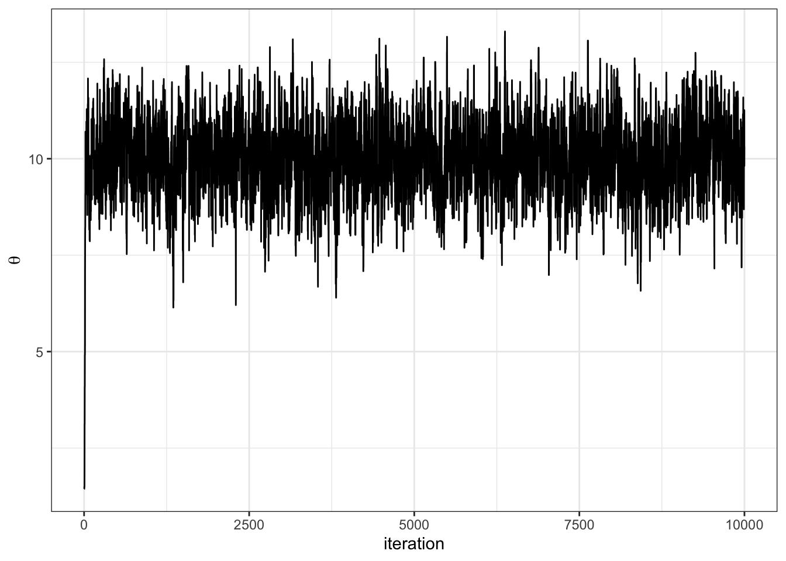
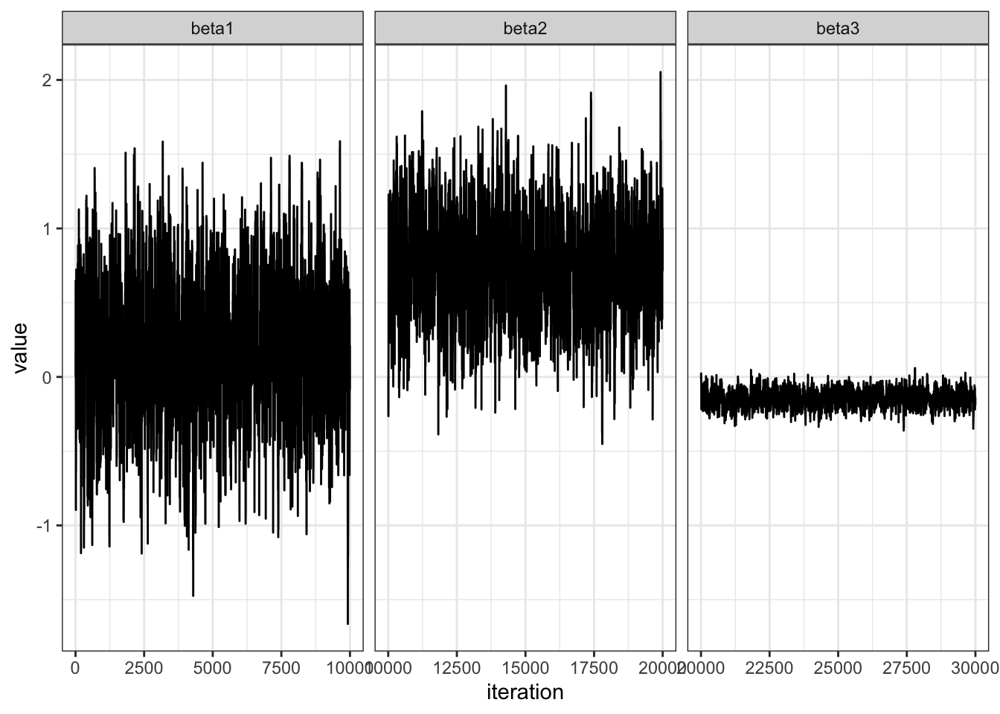
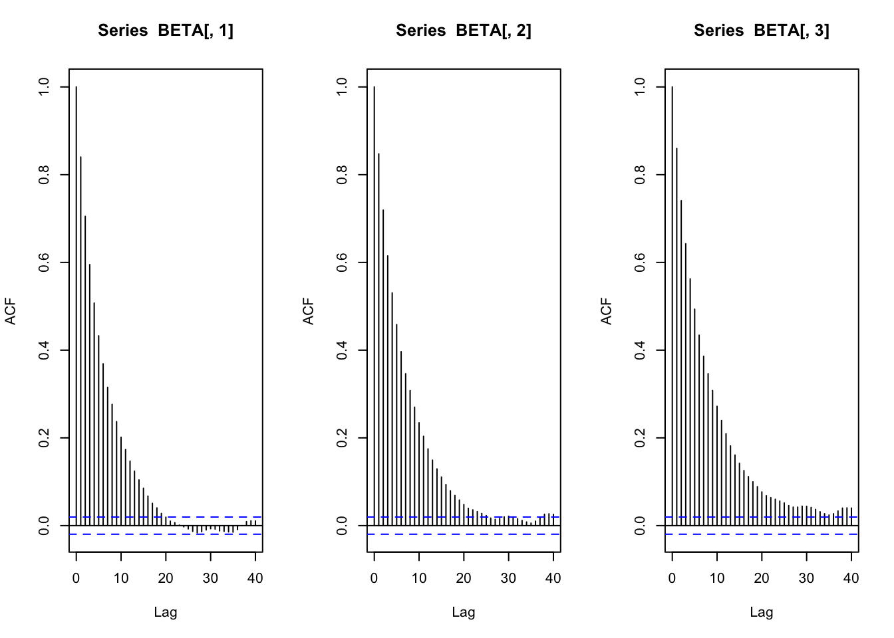

See libraries used in these notes
library(tidyverse)
library(latex2exp)
library(patchwork)
library(tidymodels)
library(mvtnorm)
library(coda)
library(animation)library(tidyverse)
library(latex2exp)
library(patchwork)
library(tidymodels)
library(mvtnorm)
library(coda)
library(animation)Question: what does the phrase “explore parameter space” mean?
\[ \theta^{(s+1)} = \begin{cases} \theta^* \text{ with probability } \min(r, 1)\\ \theta^{(s)} \text{ with probability } 1 - \min(r, 1) \end{cases} \]
Let \(\pi(\theta) = \text{dnorm}(\theta, 10, 1)\) and let \(J(\theta | \theta^{(s)}) = \text{normal}(\theta^{(s)},\delta^2)\).
We have to choose \(\delta\). How should we choose it? Let’s gain some intuition by trying out three different values of \(\delta\).
set.seed(360)
theta_s = 0 # starting point
THETA = NULL # empty object to save iterations in
S = 10000 # number of iteations
delta = 1 # proposal variance
accept = 0 # keep track of acceptance rate
for (s in 1:S) {
# log everything for numerical stability #
### generate proposal and compute ratio r ###
theta_proposal = rnorm(1, mean = theta_s, sd = delta)
log.r = dnorm(theta_proposal, mean = 10, sd = 1, log = TRUE) -
dnorm(theta_s, mean = 10, sd = 1, log = TRUE)
### accept or reject proposal and add to chain ###
if(log(runif(1)) < log.r) {
theta_s = theta_proposal
accept = accept + 1
}
THETA = c(THETA, theta_s)
}Let’s look at a trace plot

df = data.frame(theta = THETA)
df %>%
ggplot(aes(x = 1:nrow(df), y = theta)) +
geom_line() +
theme_bw() +
labs(x = "iteration", y = TeX("\\theta"))Let’s look at how various \(\delta\) let us sample the target:


The fledglings of female song sparrows. To begin, let’s load the data.
yX = structure(c(3, 1, 1, 2, 0, 0, 6, 3, 4, 2, 1, 6, 2, 3, 3, 4, 7,
2, 2, 1, 1, 3, 5, 5, 0, 2, 1, 2, 6, 6, 2, 2, 0, 2, 4, 1, 2, 5,
1, 2, 1, 0, 0, 2, 4, 2, 2, 2, 2, 0, 3, 2, 1, 1, 1, 1, 1, 1, 1,
1, 1, 1, 1, 1, 1, 1, 1, 1, 1, 1, 1, 1, 1, 1, 1, 1, 1, 1, 1, 1,
1, 1, 1, 1, 1, 1, 1, 1, 1, 1, 1, 1, 1, 1, 1, 1, 1, 1, 1, 1, 1,
1, 1, 1, 3, 3, 1, 1, 1, 1, 1, 1, 1, 1, 2, 2, 2, 2, 2, 2, 2, 2,
2, 5, 5, 4, 4, 4, 4, 4, 4, 4, 4, 4, 4, 4, 4, 5, 4, 4, 4, 4, 5,
5, 5, 5, 3, 3, 3, 3, 3, 3, 3, 6, 1, 1, 9, 9, 1, 1, 1, 1, 1, 1,
1, 1, 4, 4, 4, 4, 4, 4, 4, 4, 4, 25, 25, 16, 16, 16, 16, 16,
16, 16, 16, 16, 16, 16, 16, 25, 16, 16, 16, 16, 25, 25, 25, 25,
9, 9, 9, 9, 9, 9, 9, 36, 1, 1), .Dim = c(52L, 4L), .Dimnames = list(
NULL, c("fledged", "intercept", "age", "age2")))yX %>%
head(n = 5) fledged intercept age age2
[1,] 3 1 3 9
[2,] 1 1 3 9
[3,] 1 1 1 1
[4,] 2 1 1 1
[5,] 0 1 1 1y = yX[,1]
X = yX[,-1]The model:
\[ \begin{aligned} Y | X &\sim \text{Poisson}(\exp[ \beta^T \boldsymbol{x}])\\ \beta &\sim MVN(0, \sqrt{10}) \end{aligned} \]
The Metropolis algorithm with
\[ J(\beta | \beta^{(s)}) = MVN(\beta^{(s)}, \hat{\sigma}^2(X^TX)^{-1}) \]
where \(\hat{\sigma}^2\) is the sample variance of \(\{\log(y_1 + 1/2), \ldots, \log(y_n + 1/2)\}\).
set.seed(360)
n = length(y)
p = ncol(X)
pmn.beta = rep(0, p) # prior mean beta
psd.beta = rep(10, p) # prior sd beta
var.prop = var(log(y + 1/2)) * solve(t(X) %*% X) # proposal variance
S = 10000
beta = rep(0, p); accepts = 0
BETA = matrix(0, nrow = S, ncol = p)
set.seed(1)
for (s in 1:S) {
# multivariate proposal of beta
beta.p = t(rmvnorm(1, beta, var.prop))
# log ratio
lhr = sum(dpois(y, exp(X %*%beta.p), log = TRUE)) -
sum(dpois(y, exp(X %*% beta), log = TRUE)) +
sum(dnorm(beta.p, pmn.beta, psd.beta, log = TRUE)) -
sum(dnorm(beta, pmn.beta, psd.beta, log = TRUE))
if (log(runif(1)) < lhr) {
beta = beta.p ; accepts = accepts + 1
}
BETA[s,] = beta
}The acceptance ratio is 0.428
Let’s examine convergence.

value = c(BETA[,1], BETA[,2], BETA[,3])
n = length(value)
beta = c(rep("beta1", n/3), rep("beta2", n/3), rep("beta3", n/3))
df = data.frame(value = value,
beta = beta)
df %>%
ggplot(aes(x = 1:nrow(df), y = value)) +
geom_line() +
facet_wrap(~ beta, scales = "free_x") +
theme_bw() +
labs(x = "iteration")# effective sample size
BETA %>%
apply(2, effectiveSize)[1] 867.4750 825.6214 692.0495par(mfrow=c(1,3))
acf(BETA[,1])
acf(BETA[,2])
acf(BETA[,3])
If we have a vector of parameters \(\theta = \theta_1, \ldots \theta_p\) then we can choose a proposal \(J(\theta | \theta^{(s)})\) that updates all \(\theta\) elements simultaneously (as seen above with \(J(\beta | \beta^{(s)})\).
Alternatively, we could update blocks of \(\theta\), e.g. propose an update for the first \(j\) elements of \(\theta\), \(J_1(\theta_1,\ldots \theta_j | \theta_1^{(s)}, \ldots \theta_j^{(s)})\) and then an update for the \(p-j\) remaining elements, \(J(\theta_{j+1}, \ldots, \theta_{p} | \theta_{j+1}^{(s)}, \ldots, \theta_{p}^{(s)})\).
Separately, we could even update each element of \(\theta\) individually, e.g. have an individual, different proposal on each \(\theta_i\), \(i \in \{1, \ldots p\}\).
We might even combine block updates with individual updates.
Question: Where have we seen block updates and individual updates within MCMC before?
The Metropolis-Hastings algorithm is a generalization of both the Metropolis algorithm and the Gibbs sampler.
Let \(\pi(\theta_1, \theta_2)\) be the target distribution. The Metropolis-Hastings algorithm proceeds:
\[ r = \frac{\pi(\theta_1^*, \theta_2^{(s)})}{\pi(\theta_1^{(s)}, \theta_2^{(s)})} \times \frac{J_1(\theta_1^{(s)}| \theta_1^*, \theta_2^{(s)})}{ J_1(\theta_1^{*}| \theta_1^{(s)}, \theta_2^{(s)}) } \]
Here, the proposal distribution \(J\) need not be symmetric!